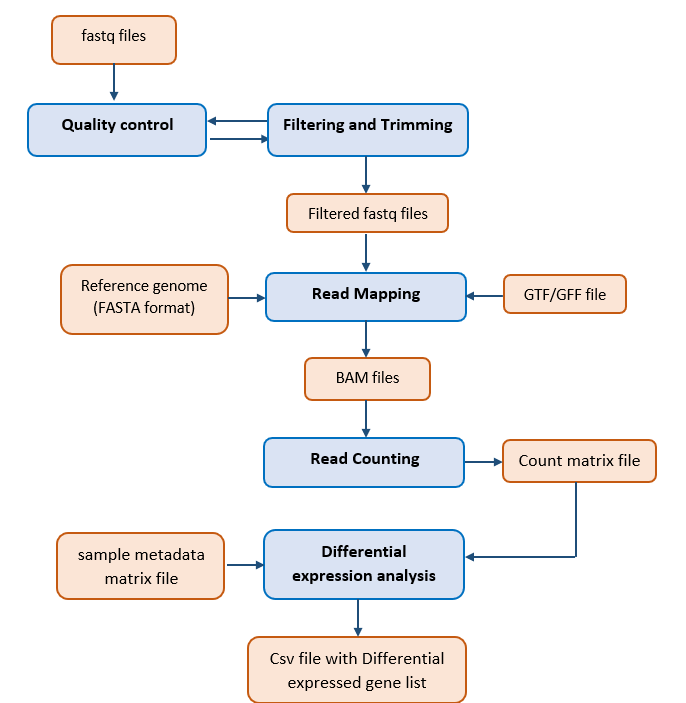

What it does
Quality control, trimming, alignment, quantification, DESeq2 differential expression, GO/KEGG/GSEA interpretation, STRINGdb PPI networks, and machine-learning biomarker ranking.
A browser-based RNA-seq workflow that runs on the user's own computer with Docker. Keep data private, avoid server setup, and move from FASTQ files to differential expression, enrichment, PPI, and biomarker discovery without coding.
After installation, open http://localhost:3838 in your browser.
localhost:3838
One landing page, one local app, and a guided module flow once the container is running.

The shortest route from download to results.
http://localhost:3838 in your browser.Quality control, trimming, alignment, quantification, DESeq2 differential expression, GO/KEGG/GSEA interpretation, STRINGdb PPI networks, and machine-learning biomarker ranking.
No central server bill, no uploading large raw sequencing files to a hosted service, and a consistent containerized environment for reproducibility.
Researchers, students, and labs that want a guided transcriptomics workflow without maintaining their own web infrastructure.
GitHub Releases for downloads, GitHub Pages for the front door, and Docker for the actual app runtime.
Everything a visitor needs to move from interest to installation.